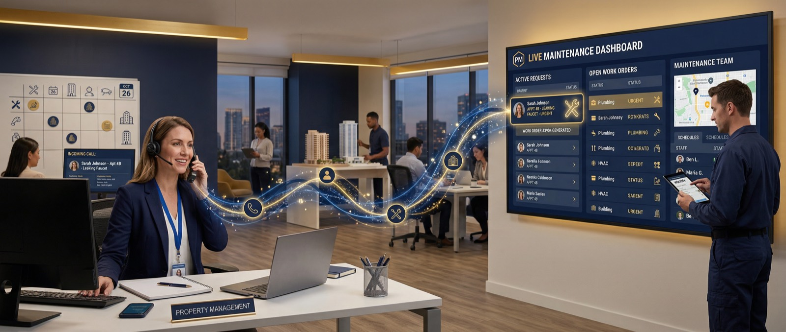
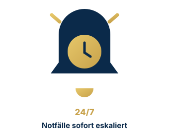
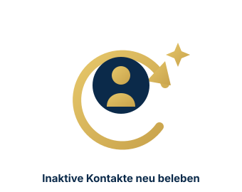

Ob Immobilien, Versicherungen, Handwerk, Kanzleien oder Gesundheitswesen – Lena & Leo kennen Ihre Prozesse, telefonieren wie Ihr bestes Teammitglied und dokumentieren alles direkt im CRM.
Use Cases stehen bei uns im Mittelpunkt. Fünf bewährte Einsatzszenarien – und jedes davon läuft direkt in Ihrem CRM.
Agentin Lena nimmt jeden Anruf sofort an, erkennt den Kunden im CRM und löst die richtigen Folgeprozesse aus – rund um die Uhr, ohne Warteschleife.
Agent Leo ruft neue Leads in Sekunden an, qualifiziert systematisch und dokumentiert alles direkt im CRM – während Ihr Wettbewerb noch die Mailbox abhört.
Lena übernimmt den telefonischen Mieterservice – strukturiert, DSGVO-konform und revisionssicher. Ihr Team konzentriert sich auf das, was wirklich Aufmerksamkeit braucht.

Die KI erkennt echte Notfälle, priorisiert nach Dringlichkeit und eskaliert ohne Verzögerung an den richtigen Ansprechpartner – alles andere wird als Aufgabe für den Morgen dokumentiert.

In Ihrer Datenbank liegt Umsatz begraben. Leo spricht inaktive Kontakte gezielt an, aktualisiert Suchprofile und weckt Interesse neu – aus kalten Leads werden neue Aufträge.

Oliver Fründt, Immobilienmakler aus Hamburg, hat zuerst einen einfachen KI-Telefonbot getestet – und dann gemerkt, dass Makler mehr brauchen als reine Telefonannahme.
„Und jetzt kommt der erste große Unterschied: Die weiß schon, wer da anruft – sie identifiziert über die Rufnummer den Kunden aus der Datenbank. Ich bin Immobilienspezialist und kein IT-Spezi. Makler brauchen keine Webhook-Bastelei – die KI soll einfach im onOffice-Prozess funktionieren.“

„Ich will den persönlichen Kontakt nicht ersetzen. Die KI soll dann da sein, wenn der Mensch für den Kunden gerade nicht verfügbar ist – das ist im Kundeninteresse viel besser als jedes Voicemail-System.“
Rufen Sie unsere Demo-Nummer an und sprechen Sie in 60 Sekunden live mit der KI. Kostenlos, ohne Anmeldung.
Fragen Sie nach einer Immobilie, bitten Sie um einen Rückruf oder testen Sie, wie die KI mit Einwänden umgeht.
040 – 743 069 53 anrufenKostenlos • Keine Anmeldung • Made in Hamburg
Wir analysieren Ihre Anruf-Situation kostenlos und zeigen den schnellsten Hebel – in 15 Minuten, unverbindlich.